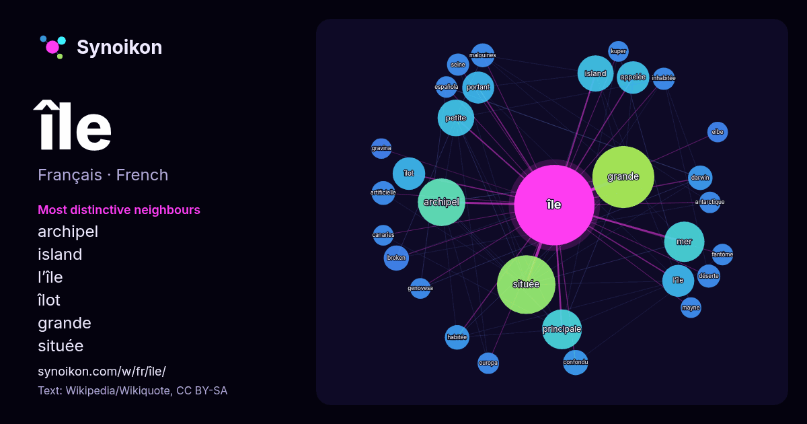

Français · liste des mots du jour
île
“island” · Les mots trouvés autour de lui dans 1733 occurrences issues de Wikipédia, Wikiquote.

Voisins les plus spécifiques
- archipel 63×
- island 32×
- l’île 30×
- îlot 29×
- grande 25×
- située 22×
- portant 20×
- mer 20×
- broken 19×
- appelée 19×
- confondu 18×
- petite 17×
- darwin 17×
- habitée 17×
- malouines 17×
- déserte 16×
- artificielle 15×
- inhabitée 15×
- principale 14×
- española 14×
× = combien de fois plus souvent que dans le texte général de Wikipédia.
Voisins les plus fréquents
- grande 108
- située 97
- archipel 64
- nom 64
- mer 46
- principale 45
- petite 38
- island 37
- sud 33
- appelée 30
- îlot 30
- l’île 29
- portant 29
- française 28
- partie 28
- petites 23
- commune 19
- broken 18
- confondu 18
- darwin 17
En contexte
- terme anglais équivalant à "île accessible à marée basse" ou "île de marée" ou "île intertidale". La superficie d'une île est sa surface en vue de haut ; Wikipedia snippets · Île
- Pour les articles homonymes, voir Île de Ré (câblier) et Ré. L’île de Ré (en poitevin: ile de Rét) est une île française située dans le golfe de Gascogne Wikipedia snippets · Île de Ré
- grande île et la plus peuplée du continent européen. La première occurrence de l'association des mots « Grande » et « Bretagne » pour désigner les îles britanniqu … Wikipedia snippets · Grande-Bretagne
- général Decaen la baptise île Bonaparte puis, en 1810, elle reprend la dénomination d’île Bourbon avant de redevenir définitivement île de la Réunion à la chute Wikipedia snippets · La Réunion
- Îles de Dinard - 7.84 km² : Île Harbour (Dinard) Autres îles d’Ille-et-Vilaine : Île Agot (Saint-Briac-sur-Mer) - 0.162 km² Île du Guesclin (Saint-Coulomb) Wikipedia snippets · Liste des îles de France
- homonymes, voir Seguin. Ne doit pas être confondu avec Île à Seguin. L'île Seguin est une île sur la Seine, dans l'ouest de la région parisienne, dans Wikipedia snippets · Île Seguin
- voir Peilz. L'île de Peilz est un îlot de Suisse situé à l'extrémité orientale du Léman, face à Villeneuve, dans le canton de Vaud. Cette île, dont l'origine Wikipedia snippets · Île de Peilz
- … e-Île. Ne doit pas être confondu avec Belle-Isle-en-Terre. Belle-Île-en-Mer, appelée plus couramment Belle-Île, est une île française rocheuse Wikipedia snippets · Belle-Île-en-Mer
Autres mots
- art
- automne
- carte
- chanson
- chat
- chemin
- cheval
- chien
- climat
- cloche
- cœur
- dieu
- désert
- eau
- famille
- forêt
- histoire
- hiver
- horloge
- jardin
- langue
- miel
- miroir
- monnaie
- montagne
- mort
- mère
- nature
- nourriture
- ombre
- pain
- pluie
- pont
- pouvoir
- printemps
- santé
- science
- sel
- silence
- temps
- tempête
- thé
- train
- travail
- trésor
- vie
- ville
- vérité
- étoile
Précalculé le 2026-10-09 avec les paramètres par défaut (±5 mots, corpus moyen). La carte interactive peut l’actualiser avec des données en direct.
Interface traduite automatiquement ; corrections bienvenues.